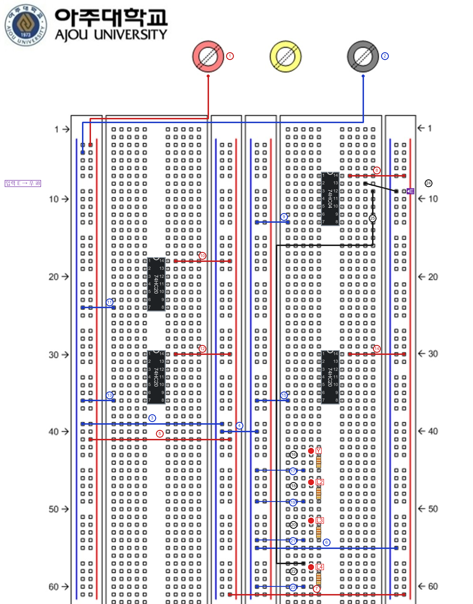
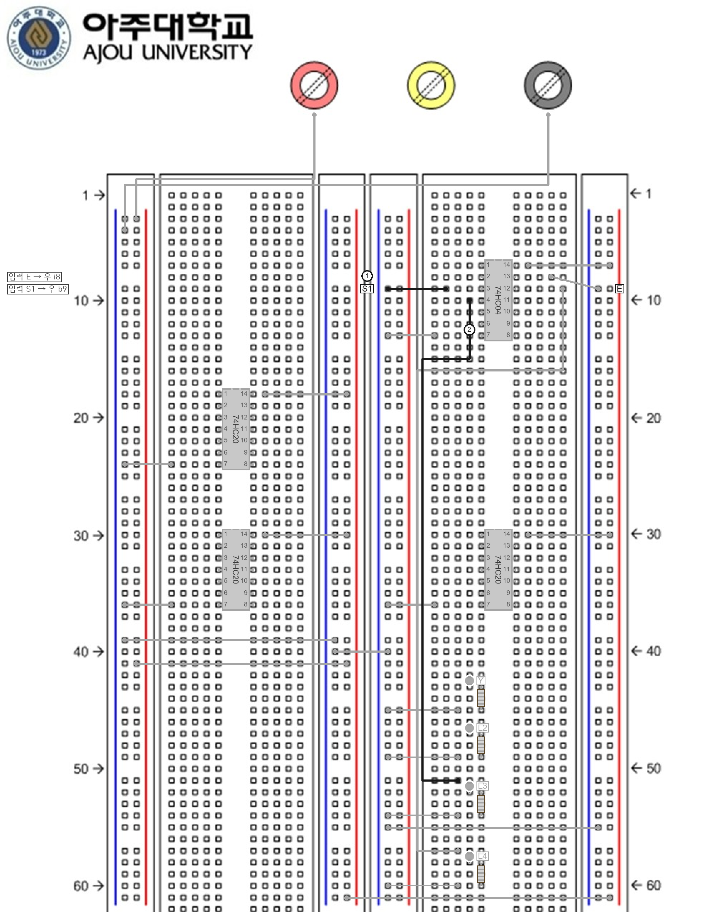
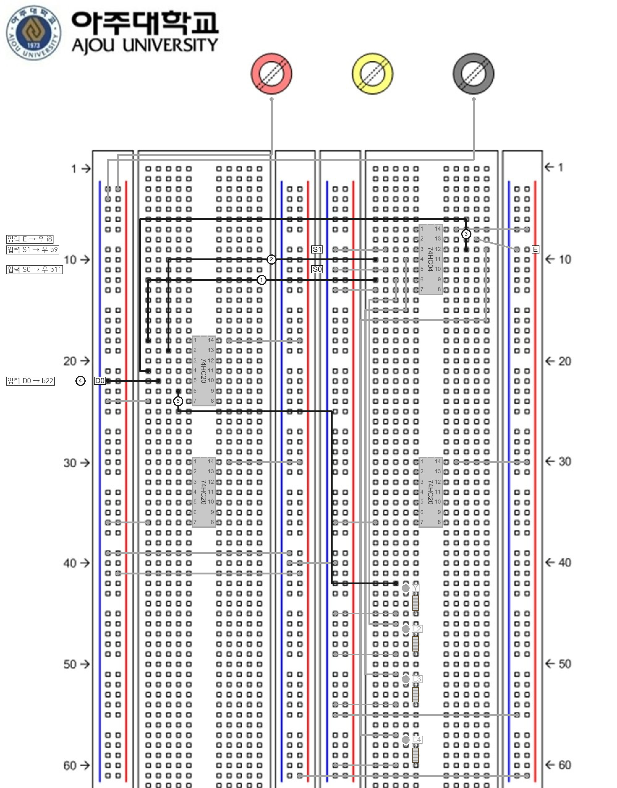
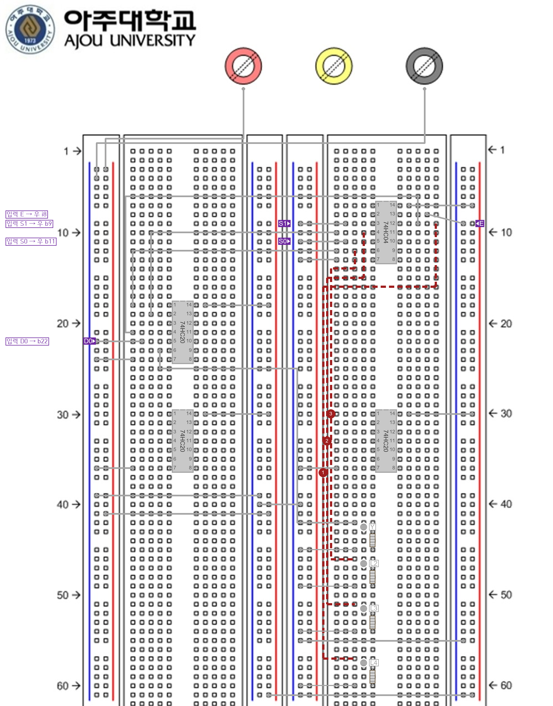
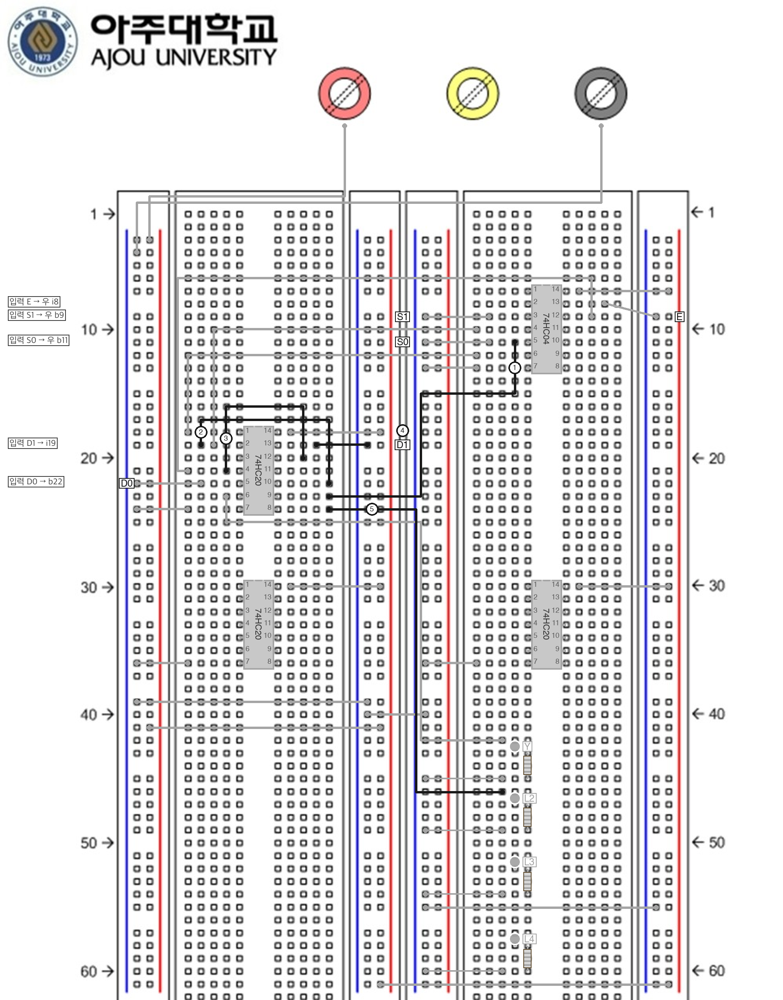
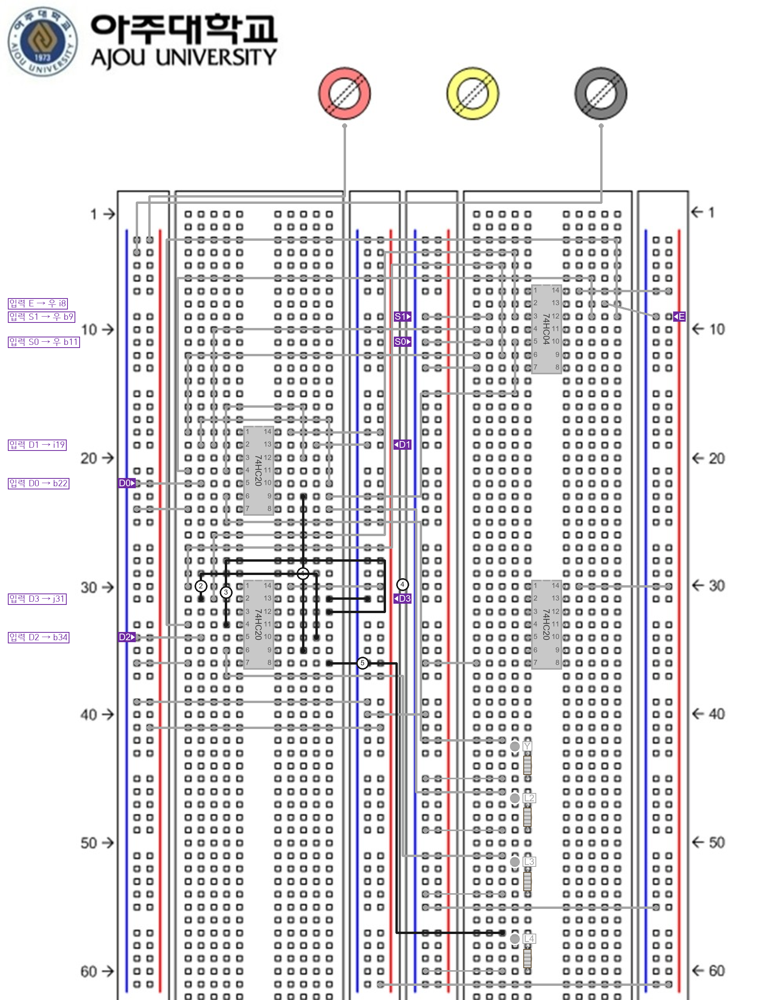
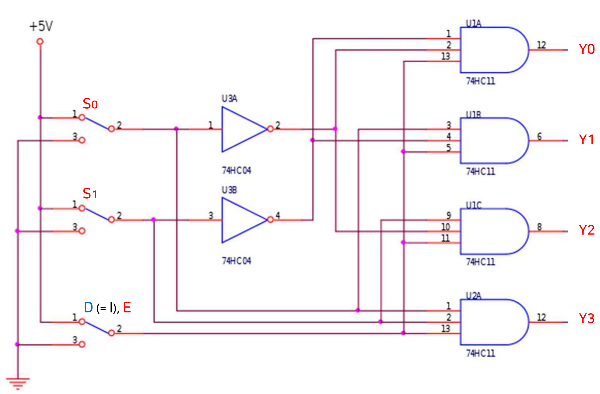
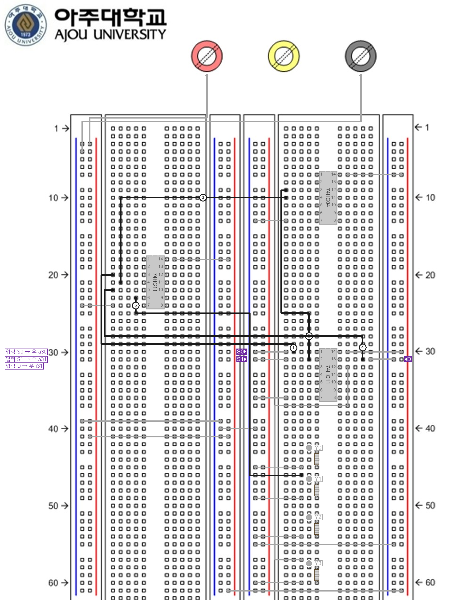
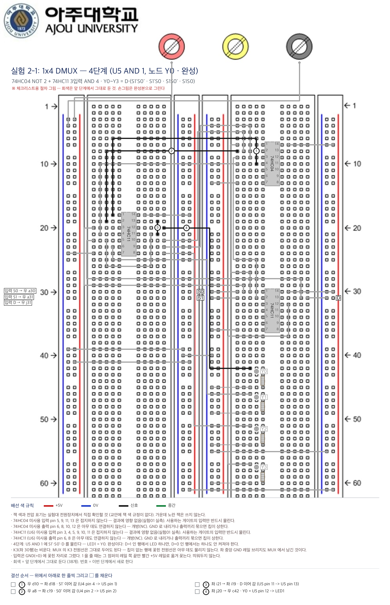

회로 1/2 · C1 · 실험 1-1) Enable을 갖는 4x1 MUX - 회로 구현 (74HC04 + 74HC20 ×3) · 기록: T1 · 판독: LED

강의노트 p8 · 회로 구성
교안 p8 회로도 그대로. 이 주차 첫 회로라 맨바닥에서 시작한다. 1단계에 네 칩(U4·U1·U2· U3)의 전원과 LED 네 사슬을 한꺼번에 꽂는다(기반). 관측 단계는 여덟이다 — 인버터 출력 셋(1~3), 앞단 NAND 출력 넷(4~7), Y(8) 순으로 신호가 흐르는 차례다. Y 가 설 때까지 LED 넷이 전부 비어 있으므로 중간 노드는 LED 로 본다: 인버터 출력은 LED4·LED3·LED2, NAND 출력은 LED1~LED4. 임시 급전선을 뽑는 자리마다 걷기 행과 걷기 그림이 한 장씩 있어 단계 표는 열 줄이다. 4~8단계는 새 신호선이 다섯이다 — 이 주차 예산이 5 다(M8). E 인버터는 교안의 게이트 1 대신 게이트 6(pin 13→12)이다(M9). 네 NAND 의 입력 배정은 래스터 회로도의 vision 판독이다(M13).
완성본 — 손그림 원도 (회색 없음)

결선도: 실험04_1-1_결선도_4x1MUX.png
U4 = 74HC04 (hex inverter, DIP-14) — K1
- pin 14 → VCC(+5V)
- pin 7 → GND
- pin 3 ← 입력 S1 (U4B)
- pin 3 → U2.pin2 (S1 갈래 → U2A)
- pin 4 → U1.pin2 (S1' → U1A)
- pin 5 ← 입력 S0 (U4C)
- pin 5 → U1.pin9 (S0 갈래 → U1B)
- pin 6 → U1.pin1 (S0' → U1A)
- pin 6 → U2.pin1 (S0' → U2A)
- pin 13 ← 입력 E (U4F — 교안은 U4A pin 1, M9)
- pin 12 → U1.pin4 (E' → U1A)
- pin 12 → U2.pin4 (E' → U2A)
U1 = 74HC20 (dual 4-input NAND, DIP-14) — K2
- pin 14 → VCC(+5V)
- pin 7 → GND
- pin 1 ← U4.pin6 (U1A, S0')
- pin 2 ← U4.pin4 (U1A, S1')
- pin 2 → U1.pin10 (S1' 이어 감)
- pin 4 ← U4.pin12 (U1A, E')
- pin 4 → U1.pin12 (E' 이어 감)
- pin 5 ← 입력 D0 (U1A)
- pin 6 → U3.pin1 (U1A 출력) ※ (E'·S1'·S0'·D0)'
- pin 9 ← U4.pin5 (U1B, S0)
- pin 9 → U2.pin9 (S0 이어 감)
- pin 10 ← U1.pin2 (U1B, S1')
- pin 12 ← U1.pin4 (U1B, E')
- pin 13 ← 입력 D1 (U1B)
- pin 8 → U3.pin2 (U1B 출력) ※ (E'·S1'·S0·D1)'
- 미연결: pin 3, 11 → 아무것도 꽂지 않는다 (n.c.)
U2 = 74HC20 (dual 4-input NAND, DIP-14) — K3
- pin 14 → VCC(+5V)
- pin 7 → GND
- pin 1 ← U4.pin6 (U2A, S0')
- pin 2 ← U4.pin3 (U2A, S1)
- pin 2 → U2.pin10 (S1 이어 감)
- pin 4 ← U4.pin12 (U2A, E')
- pin 4 → U2.pin12 (E' 이어 감)
- pin 5 ← 입력 D2 (U2A)
- pin 6 → U3.pin4 (U2A 출력) ※ (E'·S1·S0'·D2)'
- pin 9 ← U1.pin9 (U2B, S0)
- pin 10 ← U2.pin2 (U2B, S1)
- pin 12 ← U2.pin4 (U2B, E')
- pin 13 ← 입력 D3 (U2B)
- pin 8 → U3.pin5 (U2B 출력) ※ (E'·S1·S0·D3)'
- 미연결: pin 3, 11 → 아무것도 꽂지 않는다 (n.c.)
U3 = 74HC20 (dual 4-input NAND, DIP-14) — K4
- pin 14 → VCC(+5V)
- pin 7 → GND
- pin 1 ← U1.pin6 (U3A)
- pin 2 ← U1.pin8
- pin 4 ← U2.pin6
- pin 5 ← U2.pin8
- pin 6 → LED1 애노드 (330Ω 직렬) → GND ※ Y, T1 의 Y 열
- 미연결: pin 3, 11 → 아무것도 꽂지 않는다 (n.c.)
- 미사용 입력핀: pin 1, 9, 11 → 개방 (접지 생략 — 공통 규칙)
- 미사용 출력핀: pin 2, 8, 10 → 개방
- 미사용 입력핀: pin 9, 10, 12, 13 → 개방 (접지 생략 — 공통 규칙)
- 미사용 출력핀: pin 8 → 개방
E' 는 네 NAND 로, S1'·S0'·S1·S0 는 각각 NAND 둘로 팬아웃한다 — E'·S0' 는 U4 에서 U1·U2 로 따로 가고, 나머지는 목적지 스트립에서 이어 간다(M11). 교안 회로도의 게이트 입력 순서(U1A 는 pin 1 = S0', pin 2 = S1', pin 4 = E', pin 5 = D0)를 그대로 따랐다.
단계 1

이 단계에서: 74HC04 를 K1, 74HC20 을 K2·K3·K4 에 꽂는다. 네 칩 전원(14→VCC, 7→GND)·레일 브리지·LED 네 사슬(330Ω→GND)을 꽂는다. 신호선: E→U4 pin 13, 임시로 U4 pin 12→LED4 급전(우 j9→우 c57)
확인 노드: E' (U4 pin 12)
확인: 노드 E' — LED4 를 E 두 값으로 본다 (E=0 일 때만 켜짐). 74HC04 첫 사용
| 입력 — 점퍼 1=+5V · 0=GND | LED4 = E' 예상 · U4 pin 12 | 확인 |
|---|---|---|
| E | ||
| 1 | 0 | |
| 0 | 1 |
단계 2

이 단계에서: 신호선: S1→U4 pin 3, 임시로 U4 pin 4→LED3 급전(우 d10→우 c51)
확인 노드: S1' (U4 pin 4)
확인: 노드 S1' — LED3 을 S1 두 값으로 본다 (S1=0 일 때만 켜짐). LED4 는 내내 E' 를 보인다
| 입력 — 점퍼 1=+5V · 0=GND | LED3 = S1' 예상 · U4 pin 4 | 확인 |
|---|---|---|
| S1 | ||
| 0 | 1 | |
| 1 | 0 |
단계 3

이 단계에서: 신호선: S0→U4 pin 5, 임시로 U4 pin 6→LED2 급전(우 c12→우 c46)
확인 노드: S0' (U4 pin 6)
확인: 노드 S0' — LED2 를 S0 두 값으로 본다 (S0=0 일 때만 켜짐)
| 입력 — 점퍼 1=+5V · 0=GND | LED2 = S0' 예상 · U4 pin 6 | 확인 |
|---|---|---|
| S0 | ||
| 0 | 1 | |
| 1 | 0 |
단계 4

이 단계에서: 신호선: U4 pin 6→U1 pin 1, U4 pin 4→U1 pin 2, U4 pin 12→U1 pin 4, D0→U1 pin 5, 임시로 U1 pin 6→LED1 급전(좌 d23→우 c42)
확인 노드: (E'·S1'·S0'·D0)' (U1 pin 6)
확인: 노드 (E'·S1'·S0'·D0)' — LED1 을 T1 아홉 행 전부로 본다 (3행 E=0·S1S0=00·D0=1 에서만 꺼지고 나머지 여덟 행은 켜짐). 74HC20 U1 첫 사용
| 입력 — 점퍼 1=+5V · 0=GND | LED1 = (E'·S1'·S0'·D0)' 예상 · U1 pin 6 | 확인 | |||
|---|---|---|---|---|---|
| E | S1 | S0 | D0 | ||
| 1 | X | X | X | 1 | |
| 0 | 0 | 0 | 0 | 1 | |
| 0 | 0 | 0 | 1 | 0 | |
| 0 | 0 | 1 | 1 | 1 | |
| 0 | 0 | 1 | 0 | 1 | |
| 0 | 1 | 0 | 1 | 1 | |
| 0 | 1 | 0 | 0 | 1 | |
| 0 | 1 | 1 | 1 | 1 | |
| 0 | 1 | 1 | 0 | 1 | |
단계 5 · 걷기

이 단계에서: 전원을 끄고 걷기 ①(임시 급전 U4 pin 12→LED4, 우 j9→우 c57)·②(임시 급전 U4 pin 4→LED3, 우 d10→우 c51)·③(임시 급전 U4 pin 6→LED2, 우 c12→우 c46)을 뽑는다. 그림의 빨간 점선이 그 세 가닥이다. 회색 선은 손대지 않는다. 새로 꽂는 것은 없다
확인: 뽑은 세 가닥이 손에 있고 우 j9·우 c57·우 d10·우 c51·우 c12·우 c46 홀이 비어 있다 (LED 검사 없음)
단계 5

이 단계에서: 신호선: U4 pin 5→U1 pin 9 (S0 갈래), U1 pin 2→U1 pin 10 (S1' 이어 감), U1 pin 4→U1 pin 12 (E' 이어 감), D1→U1 pin 13, 임시로 U1 pin 8→LED2 급전(좌 j24→우 c46)
확인 노드: (E'·S1'·S0·D1)' (U1 pin 8)
확인: 노드 (E'·S1'·S0·D1)' — LED2 를 T1 아홉 행 전부로 본다 (5행 E=0·S1S0=01·D1=1 에서만 꺼지고 나머지 여덟 행은 켜짐). LED1 은 내내 앞 노드를 보인다
| 입력 — 점퍼 1=+5V · 0=GND | LED2 = (E'·S1'·S0·D1)' 예상 · U1 pin 8 | 확인 | |||
|---|---|---|---|---|---|
| E | S1 | S0 | D1 | ||
| 1 | X | X | X | 1 | |
| 0 | 0 | 0 | 1 | 1 | |
| 0 | 0 | 0 | 0 | 1 | |
| 0 | 0 | 1 | 0 | 1 | |
| 0 | 0 | 1 | 1 | 0 | |
| 0 | 1 | 0 | 1 | 1 | |
| 0 | 1 | 0 | 0 | 1 | |
| 0 | 1 | 1 | 1 | 1 | |
| 0 | 1 | 1 | 0 | 1 | |
단계 6

이 단계에서: 신호선: U4 pin 6→U2 pin 1 (S0'), U4 pin 3→U2 pin 2 (S1 갈래), U4 pin 12→U2 pin 4 (E'), D2→U2 pin 5, 임시로 U2 pin 6→LED3 급전(좌 d35→우 c51)
확인 노드: (E'·S1·S0'·D2)' (U2 pin 6)
확인: 노드 (E'·S1·S0'·D2)' — LED3 을 T1 아홉 행 전부로 본다 (7행 E=0·S1S0=10·D2=1 에서만 꺼지고 나머지 여덟 행은 켜짐). 74HC20 U2 첫 사용
| 입력 — 점퍼 1=+5V · 0=GND | LED3 = (E'·S1·S0'·D2)' 예상 · U2 pin 6 | 확인 | |||
|---|---|---|---|---|---|
| E | S1 | S0 | D2 | ||
| 1 | X | X | X | 1 | |
| 0 | 0 | 0 | 1 | 1 | |
| 0 | 0 | 0 | 0 | 1 | |
| 0 | 0 | 1 | 1 | 1 | |
| 0 | 0 | 1 | 0 | 1 | |
| 0 | 1 | 0 | 0 | 1 | |
| 0 | 1 | 0 | 1 | 0 | |
| 0 | 1 | 1 | 1 | 1 | |
| 0 | 1 | 1 | 0 | 1 | |
단계 7

이 단계에서: 신호선: U1 pin 9→U2 pin 9 (S0 이어 감), U2 pin 2→U2 pin 10 (S1 이어 감), U2 pin 4→U2 pin 12 (E' 이어 감), D3→U2 pin 13, 임시로 U2 pin 8→LED4 급전(좌 j36→우 c57)
확인 노드: (E'·S1·S0·D3)' (U2 pin 8)
확인: 노드 (E'·S1·S0·D3)' — LED4 를 T1 아홉 행 전부로 본다 (9행 E=0·S1S0=11·D3=1 에서만 꺼지고 나머지 여덟 행은 켜짐)
| 입력 — 점퍼 1=+5V · 0=GND | LED4 = (E'·S1·S0·D3)' 예상 · U2 pin 8 | 확인 | |||
|---|---|---|---|---|---|
| E | S1 | S0 | D3 | ||
| 1 | X | X | X | 1 | |
| 0 | 0 | 0 | 1 | 1 | |
| 0 | 0 | 0 | 0 | 1 | |
| 0 | 0 | 1 | 1 | 1 | |
| 0 | 0 | 1 | 0 | 1 | |
| 0 | 1 | 0 | 1 | 1 | |
| 0 | 1 | 0 | 0 | 1 | |
| 0 | 1 | 1 | 0 | 1 | |
| 0 | 1 | 1 | 1 | 0 | |
단계 8 · 걷기

이 단계에서: 전원을 끄고 걷기 ①(임시 급전 U1 pin 6→LED1, 좌 d23→우 c42)·②(임시 급전 U1 pin 8→LED2, 좌 j24→우 c46)·③(임시 급전 U2 pin 6→LED3, 좌 d35→우 c51)·④(임시 급전 U2 pin 8→LED4, 좌 j36→우 c57)를 뽑는다. 그림의 빨간 점선이 그 네 가닥이다. 회색 선은 손대지 않는다. 새로 꽂는 것은 없다
확인: 뽑은 네 가닥이 손에 있고 좌 d23·우 c42·좌 j24·우 c46·좌 d35·우 c51·좌 j36·우 c57 홀이 비어 있다 (LED 검사 없음)
단계 8

이 단계에서: 신호선: U1 pin 6→U3 pin 1, U1 pin 8→U3 pin 2, U2 pin 6→U3 pin 4, U2 pin 8→U3 pin 5, U3 pin 6→LED1 급전(우 c35→우 c42)
확인 노드: Y (U3 pin 6)
확인: 노드 Y — T1 아홉 행 전부 (74HC20 U3 첫 사용). 1행은 E=1 이면 나머지 입력과 상관없이 꺼짐
T1 · Enable을 갖는 4x1 MUX 진리표
출처: derived (Y = E'·(S1'·S0'·D0 + S1'·S0·D1 + S1·S0'·D2 + S1·S0·D3))
| E | S1 | S0 | D0 | D1 | D2 | D3 | Y예상 | 확인 | 사진 파일명 |
|---|---|---|---|---|---|---|---|---|---|
| 1 | X | X | X | X | X | X | 0 | — | |
| 0 | 0 | 0 | 0 | 1 | 1 | 1 | 0 | 1-1 0000111.jpg | |
| 0 | 0 | 0 | 1 | 0 | 0 | 0 | 1 | 1-1 0001000.jpg | |
| 0 | 0 | 1 | 1 | 0 | 1 | 1 | 0 | 1-1 0011011.jpg | |
| 0 | 0 | 1 | 0 | 1 | 0 | 0 | 1 | 1-1 0010100.jpg | |
| 0 | 1 | 0 | 1 | 1 | 0 | 1 | 0 | 1-1 0101101.jpg | |
| 0 | 1 | 0 | 0 | 0 | 1 | 0 | 1 | 1-1 0100010.jpg | |
| 0 | 1 | 1 | 1 | 1 | 1 | 0 | 0 | 1-1 0111110.jpg | |
| 0 | 1 | 1 | 0 | 0 | 0 | 1 | 1 | 1-1 0110001.jpg |
사진: 시험한 행마다 1장(불일치 행 필수). 파일명은 표의 '사진 파일명' 열 그대로 — 앞에 실험 번호(예: 실험03)를 붙이지 않는다
T1 · 불일치 기록
| 불일치 행 | 예상 | 실제 | 사진 파일 | 짐작된 원인 |
|---|---|---|---|---|
T2 · 4x1 MUX Truth Table — 참조
출처: manual:p9
| E | S1 | S0 | D0 | D1 | D2 | D3 | Y |
|---|---|---|---|---|---|---|---|
| 1 | X | X | X | X | X | X | X |
| 0 | 0 | 0 | 0 | 1 | 1 | 1 | 0 |
| 0 | 0 | 0 | 1 | 0 | 0 | 0 | 1 |
| 0 | 0 | 1 | 1 | 0 | 1 | 1 | 0 |
| 0 | 0 | 1 | 0 | 1 | 0 | 0 | 1 |
| 0 | 1 | 0 | 1 | 1 | 0 | 1 | 0 |
| 0 | 1 | 0 | 0 | 0 | 1 | 0 | 1 |
| 0 | 1 | 1 | 1 | 1 | 1 | 0 | 0 |
| 0 | 1 | 1 | 0 | 0 | 0 | 1 | 1 |
회로 2/2 · C2 · 실험 2-1) Enable을 갖는 1x4 DMUX - 회로 구현 (74HC04 + 74HC11 ×2) · 기록: T3 · 판독: LED

강의노트 p11 · 회로 구성
교안 p11 회로도 그대로, C1 을 걷고 새로 짓는다(M6, 2026-09-27 결정). 전원을 끄고 C1 의 신호선(입력 점퍼·칩 사이 선·LED 급전선)을 전부 뽑는다. 전원선·레일 브리지·LED 네 사슬은 그대로 두고, 74HC20 셋을 빼고 74HC11 둘을 K2·K4 에 꽂는다 — 두 칩 모두 pin 14·7 전원이라 K2·K4 전원선을 그대로 쓴다. K3 의 전원선은 칩 없이 남아도 된다. 74HC04(U4)는 K1 에 두되 배선은 교안 p11 대로 다시 한다(pin 1 → 2 = S0', pin 3 → 4 = S1'). 전부 뽑으므로 걷기 그림이 없다 — 체크리스트 배너가 지시하고, 확인은 "보드에 전원선·브리지·LED 사슬 말고 점퍼가 하나도 없다" 로 눈으로 한다.
관측 단계는 넷이고 AND 하나가 단계 하나다. 출력 넷이 곧 LED 넷이라 임시 급전선이 없다(걷기 행도 없다). 인버터가 필요 없는 Y3 부터 세우고, S1' 이 들어오는 Y1, S0' 이 들어오는 Y2, 둘 다 쓰는 Y0 순이다 — 앞 단계에 꽂은 입력 스트립에서 이어 가도록 짠 순서이고 교안 원문이 아니다(M11). 각 단계의 새 신호선은 넷~다섯이다(예산 5, M8).
완성본 — 손그림 원도 (회색 없음)

결선도: 실험04_2-1_결선도_1x4DMUX.png
U4 = 74HC04 (hex inverter, DIP-14) — K1, C1 과 같은 칩 (배선은 새로)
- pin 14 → VCC(+5V)
- pin 7 → GND
- pin 1 ← U6.pin1 (교안 U3A, S0 이어 옴)
- pin 2 → U5.pin10 (S0')
- pin 2 → U5.pin2 (S0')
- pin 3 ← U6.pin2 (교안 U3B, S1 이어 옴)
- pin 3 → U5.pin9 (S1 이어 감)
- pin 4 → U5.pin4 (S1')
- pin 4 → U5.pin1 (S1')
U5 = 74HC11 (triple 3-input AND, DIP-14) — K2
- pin 14 → VCC(+5V)
- pin 7 → GND
- pin 1 ← U4.pin4 (교안 U1A, S1')
- pin 2 ← U4.pin2 (교안 U1A, S0')
- pin 13 ← U5.pin11 (교안 U1A, D)
- pin 12 → LED1 애노드 (330Ω 직렬) → GND ※ Y0, T3 의 Y0 열
- pin 3 ← U6.pin1 (교안 U1B, S0)
- pin 4 ← U4.pin4 (교안 U1B, S1')
- pin 5 ← U6.pin13 (교안 U1B, D)
- pin 5 → U5.pin11 (D 이어 감)
- pin 6 → LED2 애노드 (330Ω 직렬) → GND ※ Y1, T3 의 Y1 열
- pin 9 ← U4.pin3 (교안 U1C, S1)
- pin 10 ← U4.pin2 (교안 U1C, S0')
- pin 11 ← U5.pin5 (교안 U1C, D)
- pin 11 → U5.pin13 (D 이어 감)
- pin 8 → LED3 애노드 (330Ω 직렬) → GND ※ Y2, T3 의 Y2 열
U6 = 74HC11 (triple 3-input AND, DIP-14) — K4
- pin 14 → VCC(+5V)
- pin 7 → GND
- pin 1 ← 입력 S0 (교안 U2A)
- pin 1 → U5.pin3 (S0 이어 감)
- pin 1 → U4.pin1 (S0 이어 감)
- pin 2 ← 입력 S1 (교안 U2A)
- pin 2 → U4.pin3 (S1 이어 감)
- pin 13 ← 입력 D (교안 U2A)
- pin 13 → U5.pin5 (D 이어 감)
- pin 12 → LED4 애노드 (330Ω 직렬) → GND ※ Y3, T3 의 Y3 열
- 미사용 입력핀: pin 5, 9, 11, 13 → 개방 (접지 생략 — 공통 규칙)
- 미사용 출력핀: pin 6, 8, 10, 12 → 개방
- 미사용 입력핀: pin 3, 4, 5, 9, 10, 11 → 개방 (접지 생략 — 공통 규칙)
- 미사용 출력핀: pin 6, 8 → 개방
게이트 안의 입력 배정은 교안 p11 그대로다 — p11 의 U1 이 U5, U2 가 U6, U3 이 U4 다(M7). 입력 점퍼 S0·S1·D 는 U6 에 꽂고 거기서 이어 간다 — 1단계가 Y3 이라서다(M11). S1'·S0' 는 U4 에서 U5 의 두 핀으로 따로 간다 — U5 a쪽 리드를 8 이하로 두려는 것이다(M11).
단계 1

이 단계에서: (배너대로 C1 신호선을 전부 뽑고 74HC20 셋을 빼고 74HC11 을 K2·K4 에 꽂은 상태에서) 신호선: S0→U6 pin 1, S1→U6 pin 2, D→U6 pin 13, U6 pin 12→LED4 급전
확인 노드: Y3 (U6 pin 12)
확인: 노드 Y3 — LED4 를 T3 다섯 행 전부로 본다 (D=1·S1S0=11 에서만 켜짐). 74HC11 U6 첫 사용
| 입력 — 점퍼 1=+5V · 0=GND | LED4 = Y3 예상 · U6 pin 12 | 확인 | ||
|---|---|---|---|---|
| D | S1 | S0 | ||
| 0 | X | X | 0 | |
| 1 | 0 | 0 | 0 | |
| 1 | 0 | 1 | 0 | |
| 1 | 1 | 0 | 0 | |
| 1 | 1 | 1 | 1 | |
단계 2

이 단계에서: 신호선: U6 pin 2→U4 pin 3 (S1 이어 감), U4 pin 4→U5 pin 4 (S1'), U6 pin 1→U5 pin 3 (S0 이어 감), U6 pin 13→U5 pin 5 (D 이어 감), U5 pin 6→LED2 급전
확인 노드: Y1 (U5 pin 6)
확인: 노드 Y1 — LED2 를 T3 다섯 행 전부로 본다 (D=1·S1S0=01 에서만 켜짐). 74HC11 U5·74HC04 U4 첫 사용(이 회로에서)
| 입력 — 점퍼 1=+5V · 0=GND | LED2 = Y1 예상 · U5 pin 6 | 확인 | ||
|---|---|---|---|---|
| D | S1 | S0 | ||
| 0 | X | X | 0 | |
| 1 | 0 | 0 | 0 | |
| 1 | 0 | 1 | 1 | |
| 1 | 1 | 0 | 0 | |
| 1 | 1 | 1 | 0 | |
단계 3

이 단계에서: 신호선: U6 pin 1→U4 pin 1 (S0 이어 감), U4 pin 2→U5 pin 10 (S0'), U4 pin 3→U5 pin 9 (S1 이어 감), U5 pin 5→U5 pin 11 (D 이어 감), U5 pin 8→LED3 급전
확인 노드: Y2 (U5 pin 8)
확인: 노드 Y2 — LED3 을 T3 다섯 행 전부로 본다 (D=1·S1S0=10 에서만 켜짐)
| 입력 — 점퍼 1=+5V · 0=GND | LED3 = Y2 예상 · U5 pin 8 | 확인 | ||
|---|---|---|---|---|
| D | S1 | S0 | ||
| 0 | X | X | 0 | |
| 1 | 0 | 0 | 0 | |
| 1 | 0 | 1 | 0 | |
| 1 | 1 | 0 | 1 | |
| 1 | 1 | 1 | 0 | |
단계 4

이 단계에서: 신호선: U4 pin 4→U5 pin 1 (S1'), U4 pin 2→U5 pin 2 (S0'), U5 pin 11→U5 pin 13 (D 이어 감), U5 pin 12→LED1 급전
확인 노드: Y0 (U5 pin 12)
확인: 노드 Y0 — T3 다섯 행 전부. 네 LED 중 D=1 인 행에서 하나만, D=0 인 행에서는 하나도 안 켜져야 한다
T3 · Enable을 갖는 1x4 DMUX 진리표
출처: derived (Y0 = D·S1'·S0' ; Y1 = D·S1'·S0 ; Y2 = D·S1·S0' ; Y3 = D·S1·S0)
| D | S1 | S0 | Y0예상 | Y1예상 | Y2예상 | Y3예상 | 확인 | 사진 파일명 |
|---|---|---|---|---|---|---|---|---|
| 0 | X | X | 0 | 0 | 0 | 0 | — | |
| 1 | 0 | 0 | 1 | 0 | 0 | 0 | 2-1 100.jpg | |
| 1 | 0 | 1 | 0 | 1 | 0 | 0 | 2-1 101.jpg | |
| 1 | 1 | 0 | 0 | 0 | 1 | 0 | 2-1 110.jpg | |
| 1 | 1 | 1 | 0 | 0 | 0 | 1 | 2-1 111.jpg |
사진: 시험한 행마다 1장(불일치 행 필수). 파일명은 표의 '사진 파일명' 열 그대로 — 앞에 실험 번호(예: 실험03)를 붙이지 않는다
T3 · 불일치 기록
| 불일치 행 | 예상 | 실제 | 사진 파일 | 짐작된 원인 |
|---|---|---|---|---|
T4 · 1x4 DMUX Truth Table — 참조
출처: manual:p12
| D | S1 | S0 | Y0 | Y1 | Y2 | Y3 |
|---|---|---|---|---|---|---|
| 0 | X | X | X | X | X | X |
| 1 | 0 | 0 | 1 | 0 | 0 | 0 |
| 1 | 0 | 1 | 0 | 1 | 0 | 0 |
| 1 | 1 | 0 | 0 | 0 | 1 | 0 |
| 1 | 1 | 1 | 0 | 0 | 0 | 1 |
단계에서 안 본 노드 — 프로브로 찍을 핀
틀린 행에서 입력 쪽 노드부터 프로브로 찍는다. 기대값과 처음 갈라지는 노드가 고장 자리다 — 그 게이트의 입력 핀이 틀리면 선, 맞으면 게이트
| D | S1 | S0 | S0' U4 pin 2 |
S1' U4 pin 4 |
|---|---|---|---|---|
| 0 | X | X | — | — |
| 1 | 0 | 0 | 1 | 1 |
| 1 | 0 | 1 | 0 | 1 |
| 1 | 1 | 0 | 1 | 0 |
| 1 | 1 | 1 | 0 | 0 |